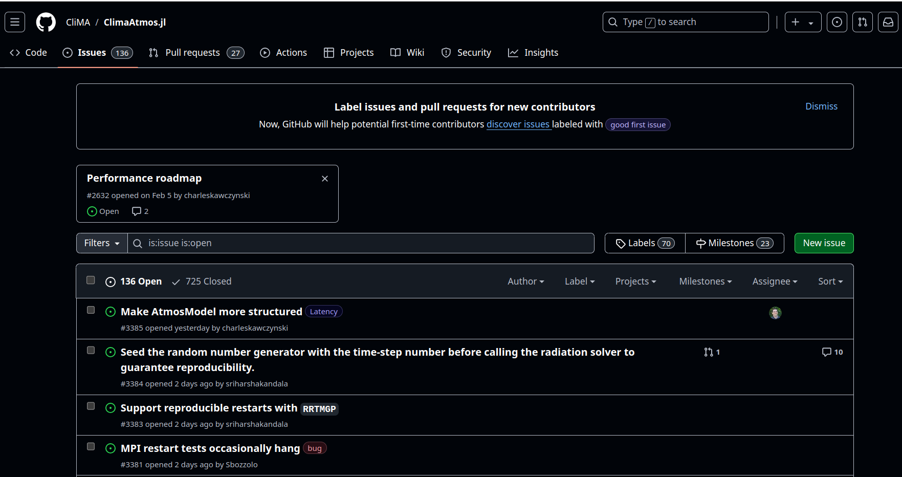
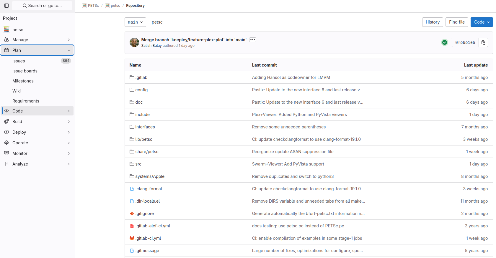

22) Community Projects#
Last time#
Reflection on algorithm choices
Low-rank structure
Primer on interpolation
Today#
Community Projects
1. Community projects#
There are several open-source, community projects hosted on major platforms like GitHub, GiLab or BitBucket. These are collaborative projects, often led or maintained by volunteers or not-for-profit organizations.
Here are a few I contributed to:
libCEED (main contributor)
PETSc (minor contributor)
ClimaCore.jl (main contributor)
ClimaAtmos.jl (contributor)
ClimaCoupler.jl (contributor)
You may want to check out a few of these online communities, and if you think you want to propose any suggested changes to their repositories, you can propose your own suggestions
Before proposing any contributions, when checking out open-source, community projects, make sure to read about their coding conventions or style guides
If you recognize the need for a feature that you and others may use in your work, please consider contributing this feature yourself. First by opening an Issue, if one associated to this feature is not already open.
1.1 Issues as Trackers for Project Management#
Many open-source community projects use GitHub/GitLab/Bitbucket Issues for tracking proposed work, things to do, progress on deliverables or assignments and for discussions on these matters.
On GitHub, you will find the Issues tab at the top of the page, between the Code and Pull requests tab. See the example below from ClimaAtmos.jl

On GitLab, you will find the Issue tab, under the Plan menu on the left. See the example below from PETSc

Issues can have labels that help categorize the issues: e.g., bugs, feature requests, enhancement, documentation, examples, tests, etc.
A good practice for community projects is to have what is called a “good first issue” label. So that new contributors can easily identify low-hanging fruits or entry-level contributions that do not require a lot of experience with the specific project landscape.
Larger projects use Issues and Pull Requests [or Merge Requests] in pair as a method of bookkeeping/project management. For instance, an Issue can be comprised of many Issues and each of them can be accomplished/closed by a separate PR [MR].See this example of a ClimaCore.jl Software Development Issue.
1.2 Coding Conventions, Style guides and Contributing guides#
Some projects have very specific contributing guidelines. For example:
PETSc style guide. They also mention specific styles recommended for code comments, not only code!
libCEED’s Contributing Guide also considers inclusivity, giving credit and authorship roles.
In general, unless a project has very specific coding/naming conventions and style guides, you should consider that readability and accessibility are very important aspects to make a codebase inclusive. For instance,
snake_caseorCamelCaseare more accessible thannocasefor people who have vision problems.
1.3 Community projects are indeed made by communities#
Contributions can take many forms. In academic projects, it is common that the Principal Investigator (PI) of the project may provide more conceptual contributions and guidance than code/documentation contributions. Although, this is not the norm and it is changing with younger PIs and projects.
Let’s peek at one example of a Contributors page. You can filter contributors by periods of time or by tipe of contributions. GitHub uses three contribution categories: Commits (identifieble with PRs when people squash/rebase PRs to a single commit after celaning up their work - this is very common, to keep the main branch as clean as possible), code Additions, and Deletions.
You can check contributions even by Command Line, via
gitcommands, not necessarily using the GitHub/GitLab web iterface.You can check how “big” or “influential” each addition/commit to the codebase is, by running, e.g.,
git log --shortstat.Hopefully, once you make a contribution, you will be welcomed by helpful and constructive feedback (via PR/MR Reviews) and the code maintainers can accept, partially accept or decline some of your proposed changes.
Do not fall in the trap of Code Review Anxiety! In general, code reviews are a good way of learning how to accept constructive criticism.
1.4 Best Practices and Resources#
This section does not represent an exhaustive list of what constitutes Best Practices in Community Projects, but here are some of the most important aspects:
Code Quality: There are metrics that can define code quality. Tracking code quality helps identify potential issues early in development, preventing them from becoming critical problems later. Some of the metrics include:
Cyclomatic complexity: measures how complex a code is based on the number of decision points (linearly independent paths) in the program. Simply, it counts the number of decision paths (branching) through your code.
Code Churn: how much code is added, modified, or deleted over time. Of course, younger codebases tend to be much less stable.
Code Coverage: quantifies the percentage of the codebase covered by automated tests (more below).
Documentation: By far, the most underrated, yet invaluable part in software engineering. Good documentation plays an important role during the software development lifecycle, as it records knowledge during different stages of the development cycle and eases the transfer of knowledge when team dynamics and code contributors change over time (think of people leaving/joining the project-this happens a lot, especially in Academia). A well documented code is easy for other developers or new users to understand and use.
Examples/tutorials: It is a good practice to have a dedicated directory in your codebase, often called
examples/that comprises simple examples and/or tutorials so that new users can learn about the functionality of the package/library in question. It is often the case that entry-level contributions from newcomers are examples, often expanding existing examples or taking them as templates.Automated testing: The process of ensuring that a software product is meeting its requirements. Testing suites help to avoid defects and verify correctness. An example of a testing suite. Automated testing can be composed of multiple parts:
Unit tests: they are intentionally limited in scope, testing one function/functionality at a time (e.g., only a mathamtical operator at a time).
Integration tests: they can include more complex scenarios (think of more physically-relevant or engineering problems). Usually integration tests have an output different from just Pass/Fail (can include graphs, images, videos, numerical quantities of interest, etc.). Here an example.
Continuous Integration/Continuous Development or Deployment (CI/CD): Testing that is maximally integrated with code commits to promote efficient co-development and well-defined delivery criteria. Every time someone wants to merge changes into a codebase, if the project has CI/CD infrastructure in place, they will have to pass all tests before the changes can be merged into the upstream codebase.
Code Coverage: the percentage of the codebase that is exercised by the test suite. The higher the better code quality is, generally. Although, developers need to make sure that the tests in the test suite cover all possible edge cases and (mis)uses of the software.
Do not unintentionally make your code more obscure or obfuscated than it should be.
A useful resource for Scientific Software: Better Scientific Software.
Software Sustainability: The ability of software to continue or evolve over time (or even support itself financially).
Avoid maintenance burdens: this can present itself with code duplications, outdated examples/tutorials or duplication between snippets of code and documentation.
Code Security: How resistant the code is to attacks and risks? Usually this is not an issue for numerical/scientific software.